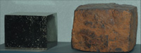
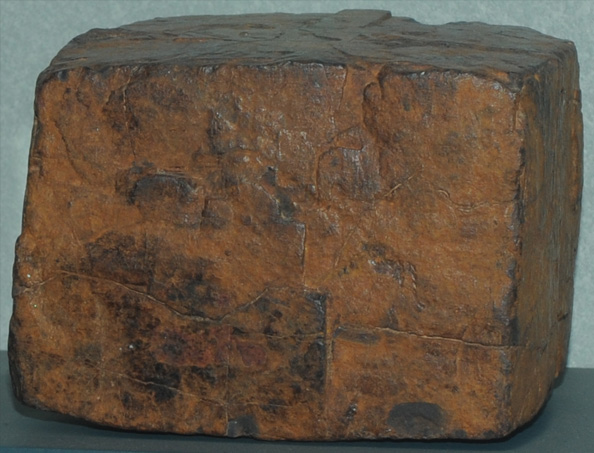

|
This goethite sample was formed after pyrite when chemical conditions changed. It retains the pyrite's basic cubic shape, so it is a pseudomorph. Pyrite is an iron sulfide, and goethite is an iron oxide hydroxide. 
This compares the goethite sample with a cubic pyrite sample from Ambassaguas mine, Amejun, La Rioja, Spain.
|

|